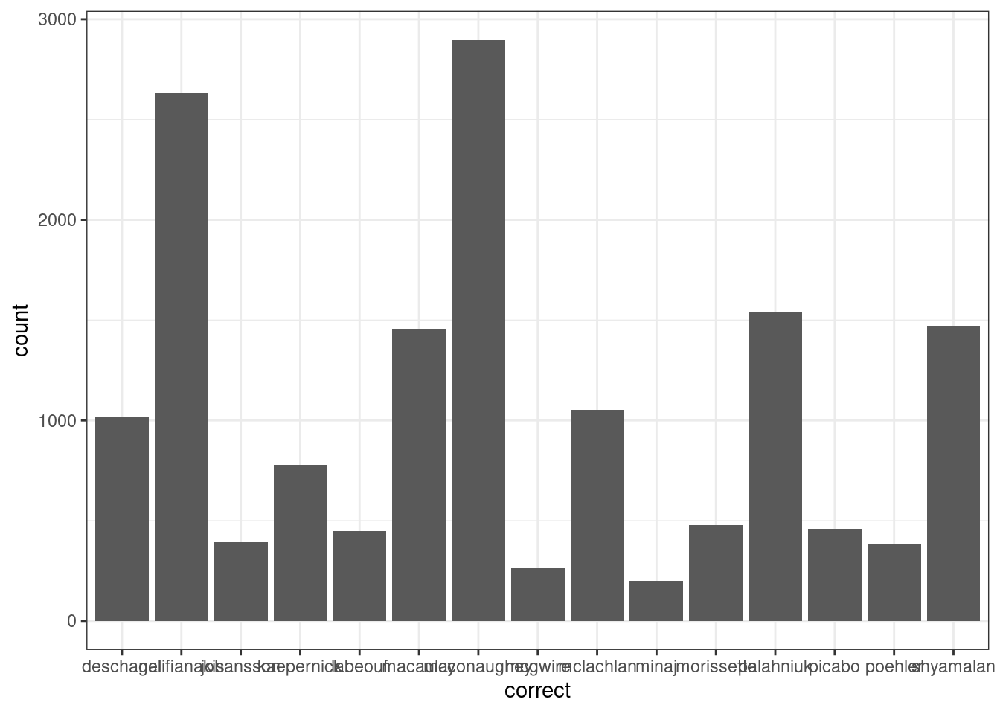

8 Собственные функции и использование их в tidyverse
8.1 Напоминание: логические операции
Логическое “и”:
| & | TRUE | FALSE |
|---|---|---|
| TRUE | TRUE | FALSE |
| FALSE | FALSE | FALSE |
## [1] TRUE## [1] FALSEЛогическое “или”:
| | | TRUE | FALSE |
|---|---|---|
| TRUE | TRUE | TRUE |
| FALSE | TRUE | FALSE |
## [1] TRUE## [1] TRUEЛогическое “не”:
## [1] FALSEСравнение:
## [1] TRUE## [1] FALSE## [1] TRUE## [1] FALSE TRUE8.2 Создание собственных функций
Собственные функции можно сделать с помощью функции function(). Ее можно записать в переменную и использовать:
## [1] 3## [1] 1Вообще, функции немного зависят от загруженных пакетов, так что безопаснее либо эксплицитно включать билиотеку внутри функции, или же говорить, из какой библиотеки функция:
Функцию можно вызывать внутри себя самой (рекурсия), вот так будет выглядеть функция, которая считает факториал:
## [1] 6## [1] 24## [1] 40320## [1] 1Напишите свою функцию, которая будет сравнивать, какое слово длиннее:
## [1] "цветок"## [1] "животное"## [1] "воробей"8.3 Использование условий в tidyverse
8.3.1 Условия в строчках
Мы уже визуализировали данные из статьи на Pudding про английские пабы. Часть названий этих пабов имеет слово Inn, давайте построим график распределения 30 самых популярных пабов с этим словом в названии и без него. Используя известные нам инструменты можно получить что-то в этом роде:
uk_pubs <- read_csv("https://raw.githubusercontent.com/agricolamz/DS_for_DH/master/data/UK_pubs.csv")
uk_pubs %>%
count(pub_name, sort = TRUE) %>%
mutate(inn = str_detect(pub_name, "Inn")) %>%
group_by(inn) %>%
slice(1:20) %>%
ggplot(aes(fct_reorder(pub_name, n), n))+
geom_col()+
coord_flip()+
facet_wrap(~inn, scale = "free")+
labs(x = "", y = "", caption = "https://pudding.cool/2019/10/pubs/")
Получилось в целом то, что мы хотели, однако названия TRUE и FALSE не самые удачные. Исправить положение можно при помощи функции ifelse(), у которой три аргумента:
- условие,
- значение, если условие принимает значение
TRUE, - значение, если условие принимает значение
FALSE.
## [1] "правильно"## [1] "неправильно"Вставим эту функцию в уже написанные код:
uk_pubs %>%
count(pub_name, sort = TRUE) %>%
mutate(inn = ifelse(str_detect(pub_name, "Inn"),
"with 'inn'",
"without 'inn'")) %>%
group_by(inn) %>%
slice(1:20) %>%
ggplot(aes(fct_reorder(pub_name, n), n))+
geom_col()+
coord_flip()+
facet_wrap(~inn, scale = "free")+
labs(x = "", y = "", caption = "https://pudding.cool/2019/10/pubs/")
А что если условий больше? В целом, выражение ifelse() можно вложить в выражение ifelse(), однако для таких случаев придумали функцию case_when(). У нее немного необычный синтаксис:
case_when(
условие 1 ~ значение x,
условие 2 ~ значение y,
...
условие n ~ значение z
)Давайте в том же датасете посмотрим на названия со словами Inn, Hotel, Bar, House и Tavern:
uk_pubs %>%
count(pub_name, sort = TRUE) %>%
mutate(place = case_when(
str_detect(pub_name, "Inn") ~ "inn",
str_detect(pub_name, "Hotel") ~ "hotel",
str_detect(pub_name, "Bar") ~ "bar",
str_detect(pub_name, "House") ~ "house",
str_detect(pub_name, "Tavern") ~ "tavern")) %>%
group_by(place) %>%
slice(1:10) %>%
ggplot(aes(fct_reorder(pub_name, n), n))+
geom_col()+
coord_flip()+
facet_wrap(~place, scale = "free")+
labs(x = "", y = "", caption = "https://pudding.cool/2019/10/pubs/")
Варинат NA, как видно из графика, соответствует всем оставшимся вариантам, которые не подпали ни под одно из наших условий. Чтобы учесть и этот случай, нужно добавить условие TRUE:
uk_pubs %>%
count(pub_name, sort = TRUE) %>%
mutate(place = case_when(
str_detect(pub_name, "Inn") ~ "inn",
str_detect(pub_name, "Hotel") ~ "hotel",
str_detect(pub_name, "Bar") ~ "bar",
str_detect(pub_name, "House") ~ "house",
str_detect(pub_name, "Tavern") ~ "tavern",
TRUE ~ "other")) %>%
group_by(place) %>%
slice(1:10) %>%
ggplot(aes(fct_reorder(pub_name, n), n))+
geom_col()+
coord_flip()+
facet_wrap(~place, scale = "free")+
labs(x = "", y = "", caption = "https://pudding.cool/2019/10/pubs/")
Мы уже визуализировали данные из статьи на Pudding “Finding Forever Homes”, заполните пропус, чтобы получить возростно-половую пирамиду собак в США. Когда построите приведенный график, раскомментируйте закомментированную строчку и посмотрите на результат.
dogs <- read_csv("https://raw.githubusercontent.com/r-classes/2019_2020_ds4dh_hw_2_dplyr_tidyr_ggplot2/master/data/dog_names.csv")
dogs %>%
filter(sex != "Unknown") %>%
count(sex, contact_state) %>%
group_by(contact_state) %>%
mutate(
...
) %>%
ggplot(aes(fct_reorder(contact_state, sum), n, fill = sex))+
geom_col()+
# scale_y_continuous(breaks = -2:2*1000, labels = abs(-2:2)*1000)+
coord_flip()+
labs(x = "", y = "", caption = "data from https://pudding.cool/2019/10/shelters/")+
scale_fill_brewer(palette ="Dark2")
8.3.2 Условия в столбцах
Что если хочется применить summarise() или mutate() лишь к определенным колонкам? Для этого можно использовать функции summarise_at() или mutate_at().Например, посчитать среднее во всех колонках датасета iris, которые начинаются со слова “Sepal”.
## Sepal.Length Sepal.Width Petal.Length Petal.Width Species
## 1 5.1 3.5 1.4 0.2 setosa
## 2 4.9 3.0 1.4 0.2 setosa
## 3 4.7 3.2 1.3 0.2 setosa
## 4 4.6 3.1 1.5 0.2 setosa
## 5 5.0 3.6 1.4 0.2 setosa
## 6 5.4 3.9 1.7 0.4 setosa## Sepal.Length Sepal.Width
## 1 5.843333 3.057333На месте функции starts_with() могут быть и другие:
ends_with()– заканчивается
## Sepal.Width Petal.Width
## 1 3.057333 1.199333matches()– соответствует регулярному выражению
## Sepal.Length Sepal.Width
## 1 5.843333 3.057333one_off()– из предложенного вектора значений
## # A tibble: 1 x 3
## depth price carat
## <dbl> <dbl> <dbl>
## 1 61.7 3933. 0.798Так же, используя функцию summarise_if(), можно применять какую-то операцию к каждой колонке, если она соответствует какому-то условию (обычно это используют для проверки типов переменных):
## # A tibble: 1 x 7
## carat depth table price x y z
## <dbl> <dbl> <dbl> <dbl> <dbl> <dbl> <dbl>
## 1 0.798 61.7 57.5 3933. 5.73 5.73 3.54Вот несколько примеров с mutate_..():
## # A tibble: 53,940 x 10
## carat cut color clarity depth table price x y z
## <dbl> <ord> <ord> <ord> <dbl> <dbl> <int> <dbl> <dbl> <dbl>
## 1 0.23 Ideal E SI2 61.5 55 326 3.95 3.98 2.43
## 2 0.21 Premium E SI1 59.8 61 326 3.89 3.84 2.31
## 3 0.23 Good E VS1 56.9 65 327 4.05 4.07 2.31
## 4 0.290 Premium I VS2 62.4 58 334 4.2 4.23 2.63
## 5 0.31 Good J SI2 63.3 58 335 4.34 4.35 2.75
## 6 0.24 Very Good J VVS2 62.8 57 336 3.94 3.96 2.48
## 7 0.24 Very Good I VVS1 62.3 57 336 3.95 3.98 2.47
## 8 0.26 Very Good H SI1 61.9 55 337 4.07 4.11 2.53
## 9 0.22 Fair E VS2 65.1 61 337 3.87 3.78 2.49
## 10 0.23 Very Good H VS1 59.4 61 338 4 4.05 2.39
## # … with 53,930 more rows## # A tibble: 53,940 x 10
## carat cut color clarity depth table price x y z
## <dbl> <ord> <ord> <ord> <dbl> <dbl> <dbl> <dbl> <dbl> <dbl>
## 1 0.480 Ideal E SI2 7.84 55 18.1 3.95 3.98 2.43
## 2 0.458 Premium E SI1 7.73 61 18.1 3.89 3.84 2.31
## 3 0.480 Good E VS1 7.54 65 18.1 4.05 4.07 2.31
## 4 0.539 Premium I VS2 7.90 58 18.3 4.2 4.23 2.63
## 5 0.557 Good J SI2 7.96 58 18.3 4.34 4.35 2.75
## 6 0.490 Very Good J VVS2 7.92 57 18.3 3.94 3.96 2.48
## 7 0.490 Very Good I VVS1 7.89 57 18.3 3.95 3.98 2.47
## 8 0.510 Very Good H SI1 7.87 55 18.4 4.07 4.11 2.53
## 9 0.469 Fair E VS2 8.07 61 18.4 3.87 3.78 2.49
## 10 0.480 Very Good H VS1 7.71 61 18.4 4 4.05 2.39
## # … with 53,930 more rows## # A tibble: 53,940 x 10
## carat cut color clarity depth table price x y z
## <dbl> <ord> <ord> <ord> <dbl> <dbl> <dbl> <dbl> <dbl> <dbl>
## 1 0.480 Ideal E SI2 7.84 7.42 18.1 1.99 1.99 1.56
## 2 0.458 Premium E SI1 7.73 7.81 18.1 1.97 1.96 1.52
## 3 0.480 Good E VS1 7.54 8.06 18.1 2.01 2.02 1.52
## 4 0.539 Premium I VS2 7.90 7.62 18.3 2.05 2.06 1.62
## 5 0.557 Good J SI2 7.96 7.62 18.3 2.08 2.09 1.66
## 6 0.490 Very Good J VVS2 7.92 7.55 18.3 1.98 1.99 1.57
## 7 0.490 Very Good I VVS1 7.89 7.55 18.3 1.99 1.99 1.57
## 8 0.510 Very Good H SI1 7.87 7.42 18.4 2.02 2.03 1.59
## 9 0.469 Fair E VS2 8.07 7.81 18.4 1.97 1.94 1.58
## 10 0.480 Very Good H VS1 7.71 7.81 18.4 2 2.01 1.55
## # … with 53,930 more rowsВместо mean и sqrt может быть любая другая функция, в том числе созданная вами:
## Sepal.Length Sepal.Width
## 1 25.12633 6.114667Вот здесь лежат данные по 51 американскому городу, количеству человек в них, а также ежемесячная средняя температура в Фаренгейтах. Преобразуйте фарингейты в цельсий и найдите значение минимальной температуры в датасете.
\[^0C = \frac{5}{9} \times (^0F-32)\]

8.4 Reinvent the map function
В разделе про работу со списками мы обсуждали функию map(), оказывается в нее можно вставлять любую функцию, например, пересчитаем все цены в датасете diamonds в рубли:
## # A tibble: 53,940 x 11
## carat cut color clarity depth table price x y z price_rubl
## <dbl> <ord> <ord> <ord> <dbl> <dbl> <int> <dbl> <dbl> <dbl> <dbl>
## 1 0.23 Ideal E SI2 61.5 55 326 3.95 3.98 2.43 20864
## 2 0.21 Premium E SI1 59.8 61 326 3.89 3.84 2.31 20864
## 3 0.23 Good E VS1 56.9 65 327 4.05 4.07 2.31 20928
## 4 0.290 Premium I VS2 62.4 58 334 4.2 4.23 2.63 21376
## 5 0.31 Good J SI2 63.3 58 335 4.34 4.35 2.75 21440
## 6 0.24 Very Good J VVS2 62.8 57 336 3.94 3.96 2.48 21504
## 7 0.24 Very Good I VVS1 62.3 57 336 3.95 3.98 2.47 21504
## 8 0.26 Very Good H SI1 61.9 55 337 4.07 4.11 2.53 21568
## 9 0.22 Fair E VS2 65.1 61 337 3.87 3.78 2.49 21568
## 10 0.23 Very Good H VS1 59.4 61 338 4 4.05 2.39 21632
## # … with 53,930 more rowsМожно прочитать все файлы в одной папке:
## [1] "anscombe.csv"
## [2] "article_24_from_UDHR.csv"
## [3] "character-deaths.csv"
## [4] "cities_of_russia.csv"
## [5] "datasaurus.csv"
## [6] "first_scatterplot.csv"
## [7] "freq_dict_2011.csv"
## [8] "languages_in_india.csv"
## [9] "mad_questionary.csv"
## [10] "misspelling_dataset.csv"
## [11] "perceptions_of_probability.csv"
## [12] "popovets_l_2019_colors_of_classic.csv"
## [13] "russian_sentiment.csv"
## [14] "scary_letters.csv"
## [15] "UK_pubs.csv"
## [16] "us_city_average_temperature.csv"
## [17] "zhadina.csv"all_datasets <- map(paste0("data/", list.files("data/", pattern = ".csv")), read_csv)
str(all_datasets, max.level = 1)## List of 17
## $ :Classes 'spec_tbl_df', 'tbl_df', 'tbl' and 'data.frame': 44 obs. of 4 variables:
## ..- attr(*, "spec")=
## .. .. cols(
## .. .. id = col_double(),
## .. .. dataset = col_double(),
## .. .. x = col_double(),
## .. .. y = col_double()
## .. .. )
## $ :Classes 'spec_tbl_df', 'tbl_df', 'tbl' and 'data.frame': 6 obs. of 1 variable:
## ..- attr(*, "spec")=
## .. .. cols(
## .. .. article_text = col_character()
## .. .. )
## $ :Classes 'spec_tbl_df', 'tbl_df', 'tbl' and 'data.frame': 917 obs. of 13 variables:
## ..- attr(*, "spec")=
## .. .. cols(
## .. .. Name = col_character(),
## .. .. Allegiances = col_character(),
## .. .. `Death Year` = col_double(),
## .. .. `Book of Death` = col_double(),
## .. .. `Death Chapter` = col_double(),
## .. .. `Book Intro Chapter` = col_double(),
## .. .. Gender = col_double(),
## .. .. Nobility = col_double(),
## .. .. GoT = col_double(),
## .. .. CoK = col_double(),
## .. .. SoS = col_double(),
## .. .. FfC = col_double(),
## .. .. DwD = col_double()
## .. .. )
## $ :Classes 'spec_tbl_df', 'tbl_df', 'tbl' and 'data.frame': 1097 obs. of 1 variable:
## ..- attr(*, "spec")=
## .. .. cols(
## .. .. city = col_character()
## .. .. )
## $ :Classes 'spec_tbl_df', 'tbl_df', 'tbl' and 'data.frame': 1846 obs. of 3 variables:
## ..- attr(*, "spec")=
## .. .. cols(
## .. .. dataset = col_character(),
## .. .. x = col_double(),
## .. .. y = col_double()
## .. .. )
## $ :Classes 'spec_tbl_df', 'tbl_df', 'tbl' and 'data.frame': 464 obs. of 2 variables:
## ..- attr(*, "spec")=
## .. .. cols(
## .. .. x = col_double(),
## .. .. y = col_double()
## .. .. )
## $ :Classes 'spec_tbl_df', 'tbl_df', 'tbl' and 'data.frame': 52138 obs. of 1 variable:
## ..- attr(*, "spec")=
## .. .. cols(
## .. .. `lemma pos freq_ipm` = col_character()
## .. .. )
## $ :Classes 'spec_tbl_df', 'tbl_df', 'tbl' and 'data.frame': 12 obs. of 5 variables:
## ..- attr(*, "spec")=
## .. .. cols(
## .. .. language = col_character(),
## .. .. n_L1_sp = col_double(),
## .. .. n_L2_sp = col_double(),
## .. .. n_L3_sp = col_double(),
## .. .. n_all_sp = col_double()
## .. .. )
## $ :Classes 'spec_tbl_df', 'tbl_df', 'tbl' and 'data.frame': 106 obs. of 12 variables:
## ..- attr(*, "spec")=
## .. .. cols(
## .. .. name = col_character(),
## .. .. age = col_character(),
## .. .. sex = col_character(),
## .. .. town_of_birth = col_character(),
## .. .. phone = col_character(),
## .. .. favourite_book = col_character(),
## .. .. favourite_dish = col_character(),
## .. .. favourite_drink = col_character(),
## .. .. favourite_film = col_character(),
## .. .. favourite_activity = col_character(),
## .. .. frequency_be_in_the_fresh_air = col_character(),
## .. .. fear_of_the_dark = col_character()
## .. .. )
## $ :Classes 'spec_tbl_df', 'tbl_df', 'tbl' and 'data.frame': 15477 obs. of 3 variables:
## ..- attr(*, "spec")=
## .. .. cols(
## .. .. correct = col_character(),
## .. .. spelling = col_character(),
## .. .. count = col_double()
## .. .. )
## $ :Classes 'spec_tbl_df', 'tbl_df', 'tbl' and 'data.frame': 46 obs. of 17 variables:
## ..- attr(*, "spec")=
## .. .. cols(
## .. .. `Almost Certainly` = col_double(),
## .. .. `Highly Likely` = col_double(),
## .. .. `Very Good Chance` = col_double(),
## .. .. Probable = col_double(),
## .. .. Likely = col_double(),
## .. .. Probably = col_double(),
## .. .. `We Believe` = col_double(),
## .. .. `Better Than Even` = col_double(),
## .. .. `About Even` = col_double(),
## .. .. `We Doubt` = col_double(),
## .. .. Improbable = col_double(),
## .. .. Unlikely = col_double(),
## .. .. `Probably Not` = col_double(),
## .. .. `Little Chance` = col_double(),
## .. .. `Almost No Chance` = col_double(),
## .. .. `Highly Unlikely` = col_double(),
## .. .. `Chances Are Slight` = col_double()
## .. .. )
## $ :Classes 'spec_tbl_df', 'tbl_df', 'tbl' and 'data.frame': 235 obs. of 1 variable:
## ..- attr(*, "spec")=
## .. .. cols(
## .. .. `data from https://readymag.com/u94255285/colors-of-classics/;;` = col_character()
## .. .. )
## $ :Classes 'spec_tbl_df', 'tbl_df', 'tbl' and 'data.frame': 7640 obs. of 2 variables:
## ..- attr(*, "spec")=
## .. .. cols(
## .. .. word = col_character(),
## .. .. score = col_double()
## .. .. )
## $ :Classes 'spec_tbl_df', 'tbl_df', 'tbl' and 'data.frame': 3 obs. of 1 variable:
## ..- attr(*, "spec")=
## .. .. cols(
## .. .. `cyrillic;ipa_symbols;greek` = col_character()
## .. .. )
## $ :Classes 'spec_tbl_df', 'tbl_df', 'tbl' and 'data.frame': 41097 obs. of 3 variables:
## ..- attr(*, "spec")=
## .. .. cols(
## .. .. pub_ID = col_double(),
## .. .. pub_name = col_character(),
## .. .. pub_town = col_character()
## .. .. )
## $ :Classes 'spec_tbl_df', 'tbl_df', 'tbl' and 'data.frame': 51 obs. of 26 variables:
## ..- attr(*, "spec")=
## .. .. cols(
## .. .. city = col_character(),
## .. .. population_2010 = col_double(),
## .. .. min_january = col_double(),
## .. .. min_february = col_double(),
## .. .. min_march = col_double(),
## .. .. min_april = col_double(),
## .. .. min_may = col_double(),
## .. .. min_june = col_double(),
## .. .. min_july = col_double(),
## .. .. min_august = col_double(),
## .. .. min_september = col_double(),
## .. .. min_october = col_double(),
## .. .. min_november = col_double(),
## .. .. min_december = col_double(),
## .. .. max_january = col_double(),
## .. .. max_february = col_double(),
## .. .. max_march = col_double(),
## .. .. max_april = col_double(),
## .. .. max_may = col_double(),
## .. .. max_june = col_double(),
## .. .. max_july = col_double(),
## .. .. max_august = col_double(),
## .. .. max_september = col_double(),
## .. .. max_october = col_double(),
## .. .. max_november = col_double(),
## .. .. max_december = col_double()
## .. .. )
## $ :Classes 'spec_tbl_df', 'tbl_df', 'tbl' and 'data.frame': 26 obs. of 5 variables:
## ..- attr(*, "spec")=
## .. .. cols(
## .. .. word_1 = col_character(),
## .. .. word_2 = col_character(),
## .. .. word_3 = col_character(),
## .. .. type = col_character(),
## .. .. n = col_double()
## .. .. )Можно прочитать все листы из .xlsx файла:
## [1] "2005" "2006" "2007" "2008" "2009" "2010" "2011" "2012" "2013" "2014"
## [11] "2015" "2016" "2017" "2018" "2019"excel_sheets("data/seattle_public_library_checkouts.xlsx") %>%
map(~read_xlsx("data/seattle_public_library_checkouts.xlsx", .)) ->
seatle
str(seatle, max.level = 1)## List of 15
## $ :Classes 'tbl_df', 'tbl' and 'data.frame': 3864 obs. of 5 variables:
## $ :Classes 'tbl_df', 'tbl' and 'data.frame': 11197 obs. of 5 variables:
## $ :Classes 'tbl_df', 'tbl' and 'data.frame': 12141 obs. of 5 variables:
## $ :Classes 'tbl_df', 'tbl' and 'data.frame': 15526 obs. of 5 variables:
## $ :Classes 'tbl_df', 'tbl' and 'data.frame': 16821 obs. of 5 variables:
## $ :Classes 'tbl_df', 'tbl' and 'data.frame': 15046 obs. of 5 variables:
## $ :Classes 'tbl_df', 'tbl' and 'data.frame': 13793 obs. of 5 variables:
## $ :Classes 'tbl_df', 'tbl' and 'data.frame': 13091 obs. of 5 variables:
## $ :Classes 'tbl_df', 'tbl' and 'data.frame': 15092 obs. of 5 variables:
## $ :Classes 'tbl_df', 'tbl' and 'data.frame': 14197 obs. of 5 variables:
## $ :Classes 'tbl_df', 'tbl' and 'data.frame': 12313 obs. of 5 variables:
## $ :Classes 'tbl_df', 'tbl' and 'data.frame': 10705 obs. of 5 variables:
## $ :Classes 'tbl_df', 'tbl' and 'data.frame': 10485 obs. of 5 variables:
## $ :Classes 'tbl_df', 'tbl' and 'data.frame': 9593 obs. of 5 variables:
## $ :Classes 'tbl_df', 'tbl' and 'data.frame': 6631 obs. of 5 variables:Получился список, можно использовать map_df(), которая еще и соединит все в один датафрейм.
excel_sheets("data/seattle_public_library_checkouts.xlsx") %>%
map_df(~read_xlsx("data/seattle_public_library_checkouts.xlsx", .)) ->
seatle
str(seatle, max.level = 1)## Classes 'tbl_df', 'tbl' and 'data.frame': 180495 obs. of 5 variables:
## $ id : num 759 3053 5674 6248 8262 ...
## $ type: chr "bk" "bk" "bk" "bk" ...
## $ name: chr "best nest" "Lovable Lyle" "Whose mouse are you" "In the night kitchen" ...
## $ n : num 103 101 110 243 185 172 278 221 204 324 ...
## $ year: num 2005 2005 2005 2005 2005 ...